大家好我是郑同学。上一篇确认了：78 行清单挂出一棵插件树，连主循环都是清单里的一行。这一篇回答一个更具体的问题：按下回车之后，一行清单是怎么变成一个在岗服务的。Cordis 的文档把自己的机制总结成五个概念：插件即 Service、ctx 容器、inject 依赖、类型化事件、注册可逆——这篇不把它们当五条知识点罗列，而是放进这条执行链里，走到哪一站讲哪个。沿着真实调用链走，每一站都是源码——这就是 Cordis 这个「发动机」的全部工作。
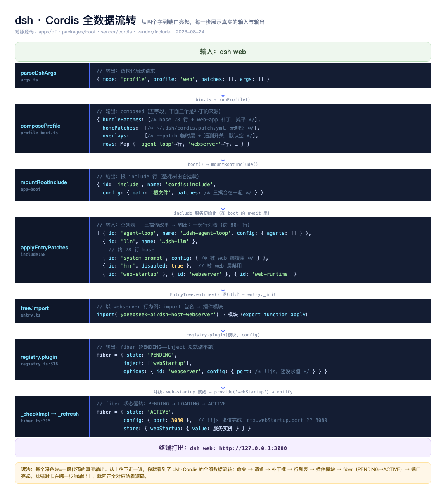
图：dsh · Cordis 全数据流转——从四个字到端口亮起，每步展示真实输入输出
● ● ●
dsh web 这四个字开始先把三种启动方式的区别摆出来，后面所有代码都在这三条线上跑：
dsh web——有头（网页版），零参数：web 本身就是内置的 profile 名，什么都不用接dsh --profile headless "任务"——无头跑一次性任务：headless 同样是内置免建，但无头没有别名，--profile 这个词必须写dsh --profile 自定义名——唯一需要「先建后用」的：走 dsh plugin --profile 名字 创建，比如给团队定制一套组合前两条说的「内置免建」，终端里看最直观（本机真实发生过）：
$ ls ~/.dsh/profiles/
ls: No such file or directory ← 第一次敲 dsh web 之前：目录不存在
$ dsh web
dsh web: http://127.0.0.1:3080 ← 首次使用自动从随包模板初始化
$ ls ~/.dsh/profiles/
web/ ← 框架自己生成的（headless 同理）
所以日常两条命令零配置开箱即用，profile 的存在感只在你想改点什么的时候才出现。
那想在 web 上自定义、或者用别的插件呢？按改动力度从轻到重，四条路：
dsh web --patch ./我的配置.yml——不改盘上任何东西，本次启动多叠一层（web 子命令自带 --patch，实测可接）~/.dsh/profiles/web/cordis.patch.yml——这就是 web 这份 profile 的个人覆盖层，保存即被热重载接住dsh plugin --profile web add 包名——往 web 的 profile 目录里装，实际是转发 pnpm，装完记进它的 package.jsondsh --profile 名字 启动——是「自定义里包含 web」，不是「web 上再挂 profile」（web 不认 --profile，给了就报错）dsh web 敲下去，第一个接手的是参数解析器。web 不是随便写的词，它是注册好的一个子命令——web 模式自己的参数原样透传，还自带两个调试用的 --dump-config 变体（apps/cli/src/args.ts:156）：
const web = program.command('web').description('boot the web profile ...')
web
// web 的参数原样透传给网页应用（--port 这些它不管）
.argument('[args...]', 'arguments for the web app (see: dsh web --help)')
.option('--patch <path>', 'extra patch-list overlay ... (repeatable)', collect)
.option('--dump-config', 'print the composed web-profile tree ... and exit')
.option('--dump-default-config', "print the web profile's bundle layers ...")
.action((args: string[], options: BootOptions) => {
// web 不吃父命令的 --profile 等选项——给了就报错：
// 因为 web 自己就是 profile 名，重复指定是矛盾
rejectParentOptions('web')
// 归一成一个启动请求：模式 profile、名字 web。
// dsh web ≡ dsh --profile web，别名关系在这落地
resolved = resolveBoot(web, 'web', options, args)
})
所以 dsh web 在进入 bin 之前就已经变成了 { mode: 'profile', profile: 'web' } 这样一个结构化请求。
这里的 profile 后面到处都是，值得停下来看清——一张图够（直译「配置档案」：名字决定加载哪些组合、叠你的哪些修改）：
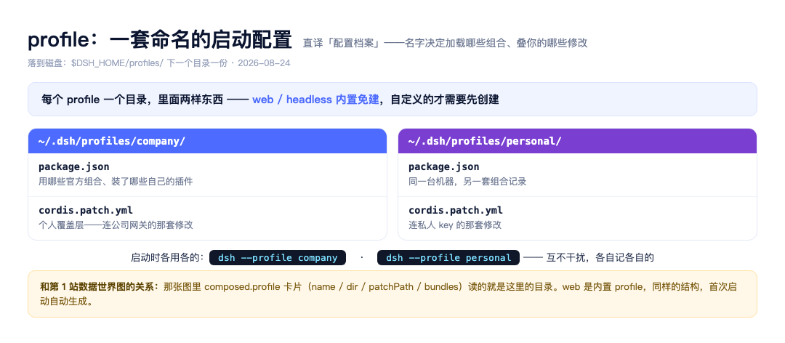
图：profile 解剖
一个目录一份，package.json 记组合与插件、cordis.patch.yml 是你的个人覆盖层；多份互不干扰。开头那张全数据流转主图里 composed 块的 profile 字段读的就是这里的目录。
接下来是启动器，它做的事用一句话说：只分发、不干活（apps/cli/src/bin.ts）：
// 解析启动器自己的参数：--profile、--patch、--help 这些
// 无效命令、用错模式的选项，在这里就非零退出
const invocation = parseDshArgs(process.argv.slice(2), readVersion())
switch (invocation.mode) {
case 'profile': {
// 按模式动态 import 对应 runner——web 模式的启动路径里
// 根本不会加载别的模式的代码
const { runProfile } = await import('./profile-boot.ts')
await runProfile({
// 分层环境变量、选中的 profile、--patch 文件、剩余参数
environment: loadLayeredEnv('dsh'),
profile: invocation.profile,
patchFiles: invocation.patches,
args: invocation.args,
})
break
}
case 'plugin': {
// 插件管理：转发给 pnpm。退出码直接透传——装失败了 dsh 也失败
const { runPlugin } = await import('./plugin.ts')
process.exit(runPlugin(invocation.profile, invocation.args))
break
}
case 'dump-config': {
// 打印合成配置树（EP01 用过的那条命令的出处）
const { runDumpConfig } = await import('./dump-config.ts')
runDumpConfig(invocation.profile, invocation.defaultOnly, invocation.patches)
break
}
default:
// TypeScript 穷尽检查：将来加新模式而这里忘了处理，
// 编译期就报错，不会静默漏网
invocation satisfies never
throw new Error(`dsh: unhandled invocation mode ${JSON.stringify(invocation)}`)
}
mode 命中 profile，进 runProfile。它做的三件事用白话说：把你的配置叠成一棵树、装上「出错就整个退出」的保险、把环境变量和命令行参数提前放进上下文。主干代码（守卫、信号、深拷贝这些工程细节放到第 8 站，这里只看主线）：
export async function runProfile(options: RunProfileOptions) {
// 第一步：读你的 profile 目录，把四层配置叠好
const composed = composeProfile(options.profile, options.patchFiles)
// ...保险与信号的装配（第 8 站展开）
const ctx = await boot(NAME, rootConfig, patches, (hostCtx) => {
// boot 会在建好根上下文后、挂任何插件之前调这个回调，
// 让你先往上下文里放启动时的数据。放两样：
// ① 环境变量快照——provide 把值挂到名字上让插件按名取用
// （存值 + 通知等待者 + 登记撤销，源码在第 2 站拆）
hostCtx.provide(DSH_LAUNCH_ENVIRONMENT_KEY, options.environment)
// ② 命令行参数——你在 dsh web --port 3000 里写的
// --port 3000 不归启动器管，它只是原样带到这，
// 交给树里的应用插件自己读。
// exit 是一个受控退出函数：插件想退出时调它，
// 走的是 shutdown 流程（先拆树再退），不是 process.exit
provideCmdline(hostCtx, {
args: options.args,
exit: code => void shutdown.shutdown(code),
})
})
app.current = ctx
// ...热重载监听的装配（第 7 站展开）
}
本站完整链路
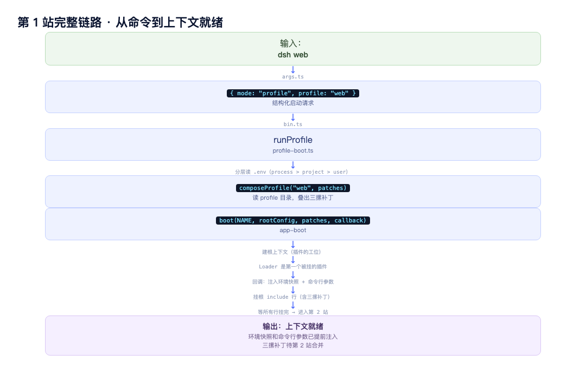
图：第 1 站完整链路
七跳流水线：
args 归一 → bin 分发 → runProfile 备场 → boot 建上下文
→ Loader 遍历 → plugin() 建档 → 上架唤醒
每跳只干一件事，细节已在上方代码块注释里。补丁怎么合并（第 2 站）、出错保险（第 8 站）、热重载接线（第 7 站）后续展开。层与层之间只有三种衔接物：命令参数、配置树、服务键位——没有谁直接伸手进别人内部，「一切皆插件」在启动流程里就是这个样子。
● ● ●
第 1 站末尾 boot 的四个输入：NAME（进程名/报错前缀）、rootConfig（根文件路径）、allPatches(composed)（四摞补丁）、回调（挂载前注入）。boot 内部五步，本站按这五步的顺序依次拆：
async function boot(binName, path, patches, prepare) {
// 1. 建根上下文（插件的工位）
const ctx = new Context()
// 2. 挂 Loader——加载器自己是第一个被挂的插件
await ctx.plugin(Loader)
// 3. 跑你的回调：注入环境快照和命令行参数
await prepare?.(ctx)
// 4. 挂根 include 行（含四摞补丁）
await mountRootInclude(ctx, path, patches)
// 5. 等所有行挂完才返回
await ctx.get("loader")?.await()
}
Context 是插件运行的上下文，一个带服务键位的对象——ctx.llm / ctx.tools 都挂在它上面。构造时挂上四个服务（fiber / reflect / registry / events / logger）、自带三个派生方法（extend / isolate / intercept），其余能力全靠服务挂载。ctx.plugin、ctx.on 这些方法怎么「挂」上去的，一张图看全：
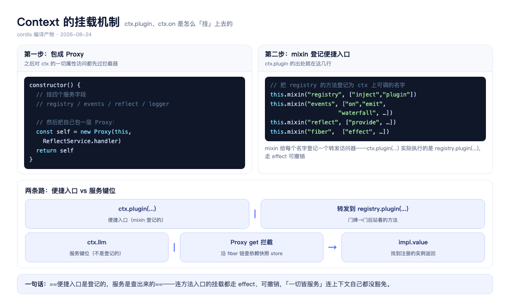
图：Context 的挂载机制
Loader 是加载器——它管理一棵 Entry 树（每个清单行对应一个 Entry 对象），对外就两个核心方法：
create(options)：往树里加一行（或更新已有行）。内部建 Entry、调 entry.update → import → 挂载tree.import(name)：把清单行的包名加载成模块。绝对路径走 file://，相对路径拼 baseUrl，包名走 Node 内部 import挂它用的是 ctx.plugin()——这个方法是整个框架的十字路口，核心 12 行（Loader 只是第一个走这条路的）：
plugin(plugin, config) {
// 校验：必须是函数或带 apply 方法的对象
const callback = this.resolve(plugin)
// 建档案：同一段代码可挂多个实例，配置各管各的
let runtime = this._internal.get(callback)
if (!runtime)
runtime = { name: plugin.name,
callback, fibers: new DisposableList() }
// 建跟踪档案：inject 在这一刻被解析
const fiber = new Fiber(ctx, config,
Inject.resolve(plugin.inject), runtime)
// 包一层 then——可以 await，boot 靠它等插件就绪
return makeAwaitable(fiber)
}
plugin() 把一段插件代码安全地变成一个可等待的实例——校验、建档案、解析依赖、包装。后面所有插件的诞生都走这一条路（Loader 只是第一个走这条路的）。
boot 建好 Context、挂好 Loader 之后，跑你在第 1 站写的回调。回调里调的 provide 核心代码（reflect.ts:277，完整版在第 4 站 super 三步里）：
provide(name, value, check) {
return this.ctx.fiber.effect(() => {
// 存值：把 { 名字, 值, 归属fiber, check } 放进货架
this.store[key] = { name, value, fiber, check }
// 通知：告诉等这个名字的 fiber——东西来了
// → 它们的状态从 PENDING 被推进
// state 2 = ACTIVE 时才发通知
if (this.ctx.fiber.state === 2)
this.notify([name])
// 返回撤销函数（effect 记下来，卸载时自动调）
return async () => {
// 从货架撤掉
delete this.store[key]
// 再通知一轮
const fibers = this.notify([name])
await Promise.allSettled(fibers.map(f => f.await()))
}
})
}
所以第 1 站那行 hostCtx.provide(DSH_LAUNCH_ENVIRONMENT_KEY, env) 做的事：存快照进货架 + 通知等它的 fiber + 登记撤销方法。
这一步挂一个根 include 行——四摞补丁作为它的 patches 配置待命。挂上去之后，include 服务初始化，它读根文件、调 applyEntryPatches 合并四摞 → 子行逐个 import + 挂载。合并的核心代码只有 15 行：
export function applyEntryPatches(data, patches, warn) {
data = structuredClone(data)
// 建 id → 行 的索引（含嵌套组）
const entryMap = new Map()
buildMap(data)
for (const patch of patches) {
const { id, insert, ...overrides } = patch
if (insert) {
// 插入行：带 id 插进那个组，不带 id 追加到列表尾
//（你的自定义插件走这条路）
if (id) entryMap.get(id).config.push(...insert)
else data.push(...insert)
// 新插的行也索引进来，后到的补丁能改它
buildMap(insert)
} else {
// 覆盖：按 id 找到目标行，overrides 盖上去
// 后写胜出 = 循环从先到后，后面的覆盖前面的
Object.assign(entryMap.get(id), overrides)
}
}
return data
}
合并前后的形态：
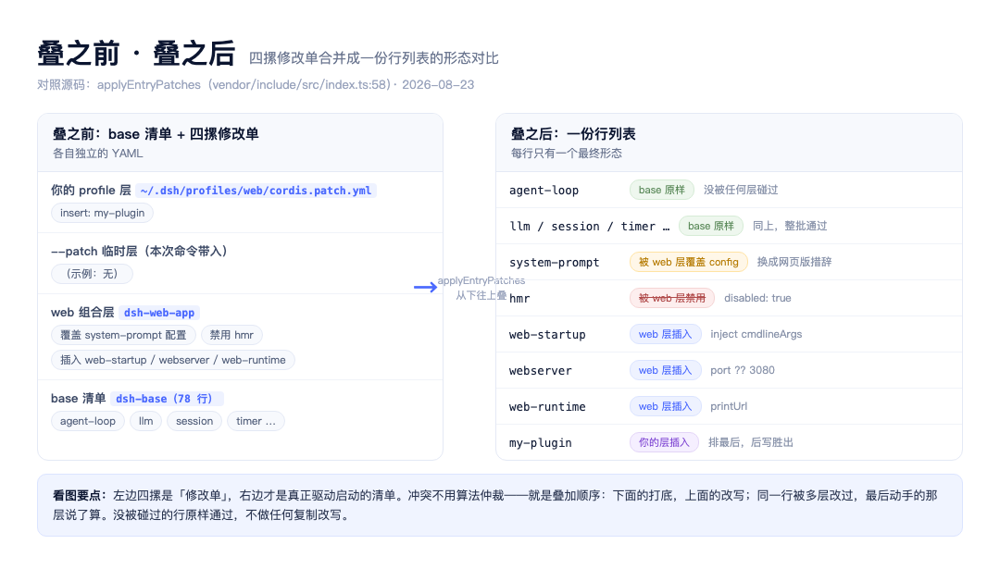
图：叠之前·叠之后
行列表出来后，每一行走两步——先 import 再挂载（entry._init → tree.import → _start → registry.plugin → fiber）：
private async _init() {
// 第一步：import 包名 → 插件模块（带 apply 方法的对象）
plugin = this.loader.unwrapExports(
await this.parent.tree.import(this.options.name))
// import 失败：错误信息带上清单行位置
// 第二步：挂载——调上面讲过的 ctx.plugin()
await this._start(plugin)
}
private async _start(plugin) {
fiber = this.ctx.registry.plugin(plugin, this.options.config)
// 等 fiber 就绪
await fiber.await()
// 失败即回收：刚建的 fiber 当场拆掉，不留残缺
}
清单每一行 → import → registry.plugin() → await 就绪，出错定位到行。
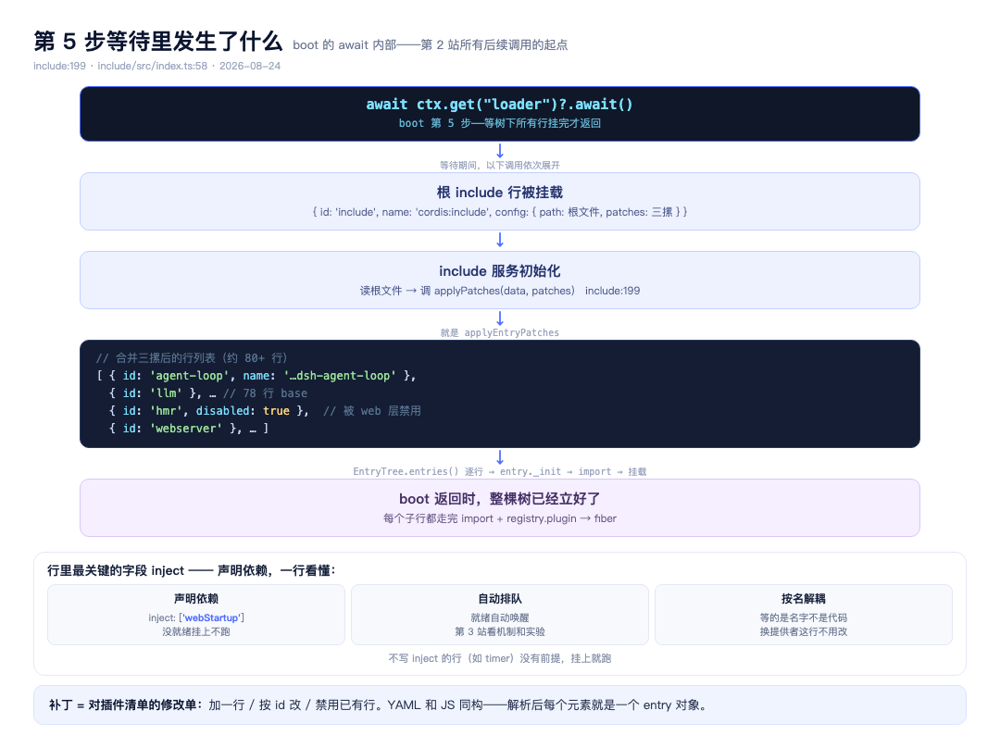
图：第 5 步等待里发生了什么
第 2 站的所有后续调用，都发生在这一步的等待里——boot 返回时整棵树已立好。
三个关键问题的答案：
_init 里 plugin 变量拿到的—— unwrapExports 统一剥出导出形态，出来的就是那个带 apply 方法的对象：
plugin = {
apply(ctx) { /* HTTP 服务器的启动逻辑 */ },
}
fiber.await() 做的事—— 等在途转换跑完、有错就抛、没错返回自己：
async await() {
while (this.inertia) await this.inertia
if (this._error) throw this._error
return this
}
plugin() 最终返回的实例—— Object.create(fiber) 包装，原型链指向 fiber，多了个 then 可被 await：
const wrapped = Object.create(fiber)
wrapped.then = (ok, fail) => fiber.await().then(ok, fail)
一句话：plugin() 返回一个「披着 Promise 外衣的 fiber」。
本站完整链路
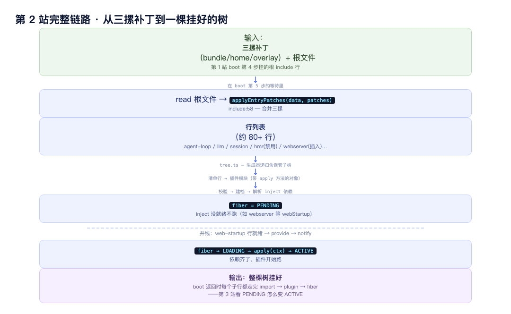
图：第 2 站完整链路
● ● ●
第 2 站结尾，plugin() 返回的 fiber 停在 PENDING——本站就看这个 PENDING 怎么一步步变成 ACTIVE。
Fiber 是插件这一次挂载的全部状态（第 2 站 Entry 骨架里的 fiber 字段指的就是它）。六个值分三组：等待-在岗是一天里的主路，失败和退役是岔路（vendor/cordis/src/fiber.ts:147）：
export const enum FiberState {
// 主路：等待 → 执行 → 在岗
PENDING,
LOADING,
ACTIVE,
// 岔路：出错 / 已移除不可重启 / 收尾执行中
FAILED,
DISPOSED,
UNLOADING,
}
日常说的「插件活着」，在源码里就是 state 停在 ACTIVE。
Fiber 的字段：uid（根 fiber 是 0，已销毁变 null）、store（依赖快照——里面就是第 4 站 reflect.provide 存进货架的那个 Impl 四字段对象 { 名字, 实例, 归属 fiber, check 函数 }）、inertia（正在进行的加载/卸载转换）、构造参数 inject / runtime。
写过 React 的人看到 Fiber 这个名字会条件反射——确实有可比性，也确实不同：
| React Fiber | Cordis Fiber | |
|---|---|---|
| 一个节点代表 | 一个组件的一次渲染单元 | 一个插件的一次挂载 |
| 核心使命 | 渲染调度：可中断、可恢复、按帧切片 | 生命周期：等待依赖、唤醒、可逆卸载 |
| 状态放哪 | memorizedState（记忆组件状态） | state + store（生命周期状态 + 依赖快照） |
| 树的形状 | 链表树（child/sibling/return 指针） | 跟随配置树（组是子树） |
| 复用机制 | 双缓冲（current / workInProgress） | 同一段代码可多实例（runtime 的 fibers 列表） |
共同的思想就一条：把「一次工作」建成一个带状态的节点，状态机推进它。React 用这思路把渲染拆成可中断的小块，Cordis 用它把插件生命周期做成可等待、可回收的对象。
PENDING 怎么变成 LOADING？挂载收尾时做一次全面体检：逐项核对依赖、再决定是否推进（fiber.ts:315）：
// 前提：自己没被移除，父上下文也不在卸载（省略其余防御）
if (this.uid !== null && parent.fiber.state !== FiberState.UNLOADING) {
// 逐个核对声明过的依赖名：那个服务真的上架了吗
for (const name of Object.keys(this.inject)) {
this._checkImpl(name)
}
// 根据核对结果推进状态：全齐进 LOADING，否则继续等
this._refresh()
}
关键在于这套核对不只跑一次。每次有服务上架或下架，notify 都会遍历全部 fiber——但只对 inject 里声明了这个名字的 fiber 做核对和推进，不相关的只做一次属性检查就跳过：
notify(names) {
for (const fiber of allFibers) {
if (!(name in fiber.inject)) continue
// ↑ 不依赖这个服务的 fiber，到这里就跳过
fiber._checkImpl(name)
fiber._refresh()
}
}
没有递归，平铺循环，80 个 fiber 的规模下开销可以忽略。
fiber 存的不是树而是两层平铺列表：外层按插件代码分组（同一段代码 → 一个 runtime），内层是这段代码挂出的所有实例（runtime.fibers 列表）。registry 按代码引用当 key（不是名字），同一代码挂两次得到两个 fiber、共用一个 runtime。树（Entry 的 parent/subtree）用来建和合并配置；平铺（registry）用来查谁依赖了谁。
跑起来什么样，实测过：B 声明依赖先注册，150 毫秒后才注册提供服务的 A——
[2ms] B 已注册（它声明要等 svcA）——此刻 B 的 apply 还没跑
[155ms] 150ms 后：注册 A
[156ms] A 构造，服务 svcA 准备上架
[156ms] B 的 apply 终于跑了，此时 ctx.svcA = object
A 上架后 1 毫秒，B 被唤醒，唤醒时依赖是现成的对象。没有启动脚本，顺序是状态机等出来的——谁依赖谁，谁就晚启动。顺带一个日常现象：依赖写错服务名不会报错，插件会一直停在 PENDING，等一个永远不会来的服务。（实验完整代码 20 行，见素材行。）
本站完整链路
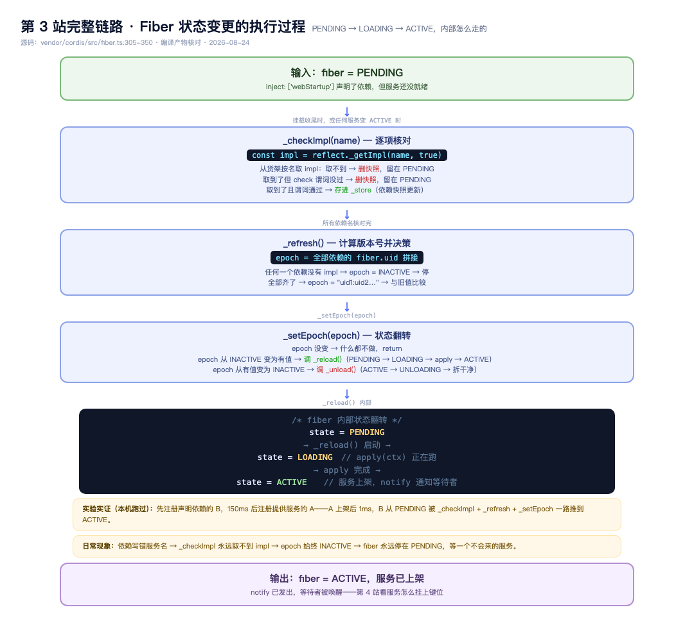
图：第 3 站完整链路——Fiber 状态变更的执行过程
● ● ●
第 3 站把 fiber 推进了 LOADING——apply 正在跑。apply 里做的事：大多数插件做的第一件事就是：把自己提供的服务挂到 ctx 上，让别人能用。
用一个最小的完整例子走一遍。假设你写了一个「天气查询」插件：
class WeatherService extends Service {
// 声明键位：挂上后别人用 ctx.weather 调
static [Service.provide] = 'weather'
constructor(ctx) {
// 这一行就完成上架
super(ctx, 'weather')
}
// 别人调 ctx.weather.get('北京') 时执行
get(city) { return fetch(`/api/weather/${city}`) }
}
你在清单里加一行：
- id: weather
name: ./weather.ts
启动时 Loader 挂载它，apply 跑到 super(ctx, 'weather') 这一行——你的服务就已经上架了。之后任何一个插件写 ctx.weather.get('北京')，拿到的就是你这边的实例。
super(ctx, 'weather') 里面核心就三步：
// 第一步：起名（决定挂到哪个键位）
// 没传就取 provide 字段 → 'weather'
name ??= this.constructor['provide']
// 第二步：上货架（provide = 挂到名字上让别人找到）
ctx.reflect.provide('weather', this, check)
// ↑ 键位 ↑ 实例 ↑ 就绪检查
//
// provide 内部（reflect.ts:277，省略隔离键细节）：
// 1. 冲突检测：同名已被注册 → 报错
// 2. 存值：{ 名字, 值, fiber, check } 放进货架
// 3. 通知：告诉等这个名字的 fiber——东西来了
// → 它们的状态从 PENDING 被推进
// 4. 返回清理函数（卸载时自动调）：
// 撤掉值 + 再通知一轮 + 等依赖方消化完
//
// 外面包的 ctx.fiber.effect()：
// 执行你的代码 + 把返回的清理函数记下来，
// 插件卸载时自动调——你不用手动清理
// 第三步：上架后发通知
// → 所有 inject: ['weather'] 的 fiber 被唤醒
// → 它们的 apply 开跑，可以用 ctx.weather 了
一句话：Service 上架 = 把实例挂到键位 + 通知等这个键位的人。
「就绪检查函数」解决的问题是：有些服务构造完了但还没准备好——比如数据库连接池，构造函数启动连接但连接还没建立。这时候你需要一个函数告诉框架「我行了吗」：
class DatabaseService extends Service {
static [Service.provide] = 'database'
private pool: Pool | null = null
constructor(ctx) {
super(ctx, 'database')
// 构造只是启动连接，不等完成
createPool().then(p => { this.pool = p })
}
// 框架会调这个函数问「就绪了吗」
// 返回 false 时，依赖 database 的插件不会启动
async [Service.check]() {
return this.pool !== null
}
}
依赖方等的不是构造函数完成，而是 check 函数返回 true。在源码里（_checkImpl），它就是这么被调的：
_checkImpl(name) {
const impl = reflect._getImpl(name)
// 从货架取：实例 + check 函数
if (!impl.check || impl.check(impl.value))
this._store[name] = impl
// ↑ check 通过（或没有 check）→ 存快照 → 依赖满足
else
delete this._store[name]
// ↑ check 返回 false → 依赖不满足 → 继续等
}
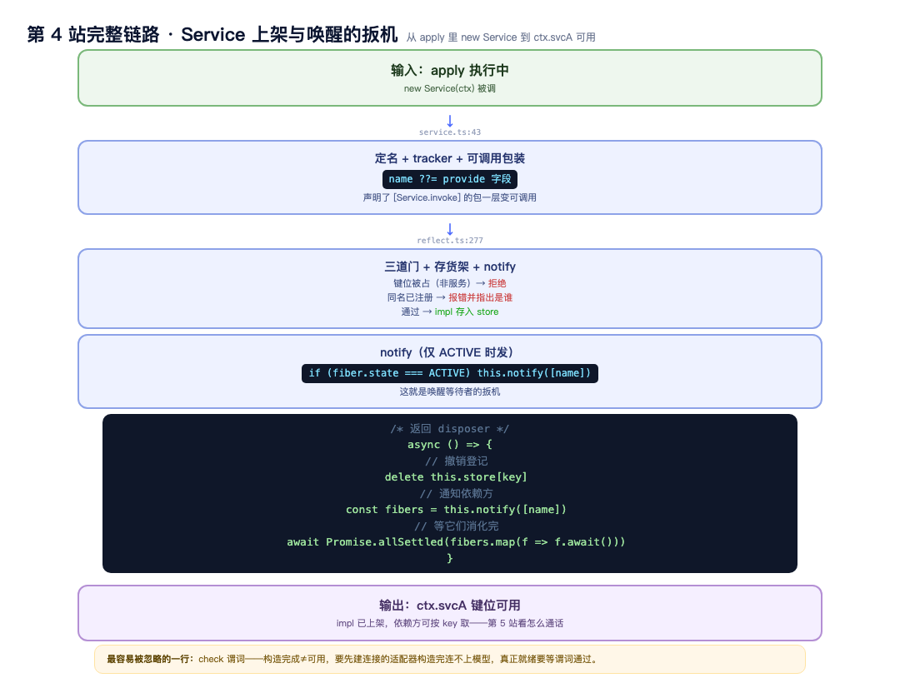
图：第 4 站完整链路——Service 上架与唤醒的扳机
● ● ●
第 4 站服务上架了，插件们进入 ACTIVE——但上架只是就位，它们之间要合作就得能互相调用。事件系统就是干这个的。分发方式有五种，最核心的是 waterfall——dsh 把权限、执行、验收全架在它上面。
用一个完整例子走一遍，inner 和 next 是什么，注释里直接看：
// ===== 完整例子：你调 ctx.tools.execute('bash', 'ls -la') =====
// ① inner：真正执行命令的函数，最底端
// 它起进程、跑命令、返回结果——不检查任何东西
const inner = async (tool, input) => {
const proc = spawn(tool, input)
return await proc.output
}
// ② 监听器：包裹在 inner 外面的壳
// 它多收到一个参数 next——「调下一层」的钥匙
ctx.on('tools/execute', async (tool, input, next) => {
// 检查权限
if (!isAllowed(input)) return '拒绝'
// next() = 把参数传给下一层
// 队列里还有别的监听器 → 调下一个
// 队列空了 → next() 落到 inner（真正干活）
return await next()
// 如果不调 next() → 后面的层和 inner 全部跳过
// → 命令不会被执行 → 这就是否决权
}, 'waterfall')
// ③ waterfall 内部，核心三行：
// 把监听器排成队列
const cbs = [权限检查]
// 取出参数表最后那个 = inner（真正干活的函数）
const inner = args.pop()
// next = 取下一个，队列空了就落到 inner
const next = () => {
const cb = cbs.shift() ?? inner
// ↑ 有下一个取下一个 ↑ 没了就调 inner
return cb(...args, next)
}
// ④ 实际执行顺序（从 next() 开始转动）：
// next() → 取出权限检查 → 权限检查跑
// → 它调 next() → 队列空了
// → cbs.shift() 返回 undefined
// → ?? inner → 调 inner → 命令真的跑了
// → 结果从 inner → 权限检查 → 你手上
inner 是真正干活的那个函数，next 是把它包起来的一层层壳之间的传话人。每个壳可以改参数、做检查、加日志，然后调 next() 传给下一层。所有壳都调了 next，才轮到 inner 执行。任何一层不调，inner 就不执行——这就是否决权。
七行源码（events.ts:234，逐行注释在上方例子已覆盖）：
waterfall(...args) {
const cbs = this.dispatch('waterfall', args)
const inner = args.pop()
const next = () => {
const cb = cbs.shift() ?? inner
return cb(...args)
}
args.push(next)
return next()
}
五种分发方式对照：emit 广播不等返回；parallel 等全体；serial 按序短路；waterfall 瀑布包裹可短路；bail 是 serial 的短路特化。（工具的三道关卡怎么用这七行搭出来，EP06 专门拆。）
本站完整链路
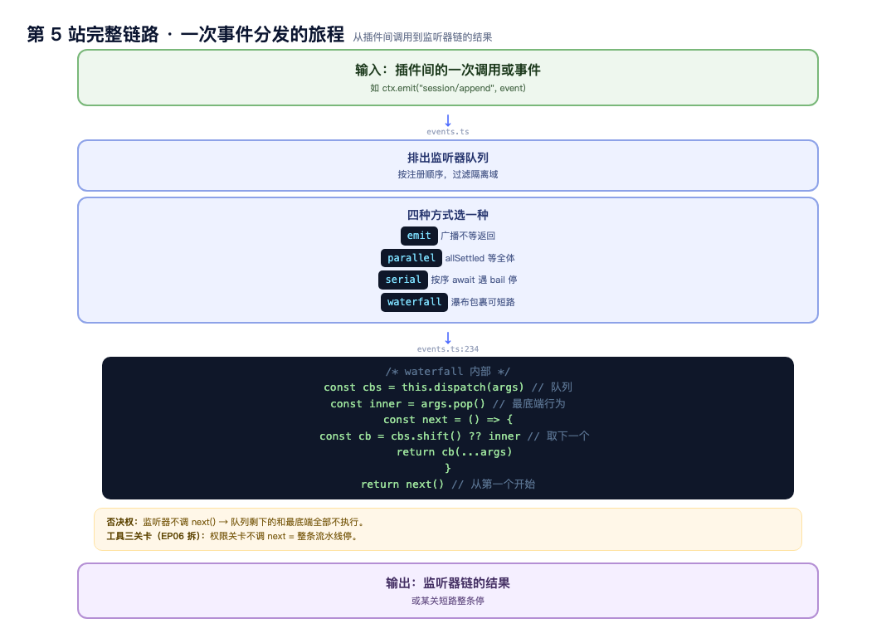
图：第 5 站完整链路——一次事件分发的旅程
● ● ●
前几站的机制攒齐了，现在回到我们的例子：dsh web 跑起来之后，是谁在 3080 端口上起了服务、终端里那行 URL 是谁打的。答案全在 web-app 这个组合包往清单里多叠的三行（packages/bundle/web-app/cordis.patch.yml:107）：
# 解析后的 web 命令行参数，做成一个普通服务提供出来
# 它自己 inject 了 cmdlineArgs——等的就是第 1 站 boot 里
# 那个「任何插件挂载之前」的 provideCmdline 注入
- id: web-startup
name: '@deepseek-ai/dsh-web-app/startup'
# HTTP 服务器：inject webStartup，等上面那行就绪才启动。
# host/port 从 webStartup 里取，取不到就回落部署默认值——
# 3080 这个数字的出处就在这两行表达式里
- id: webserver
name: '@deepseek-ai/dsh-host-webserver'
inject: [webStartup]
config:
host: !!js ctx.webStartup.host ?? '127.0.0.1'
port: !!js ctx.webStartup.port ?? 3080
# web 运行时：找到打包好的前端文件挂上静态服务、
# 注册网页版的提示词段——终端里那行 URL 就是它打的
- id: web-runtime
name: '@deepseek-ai/dsh-web-app'
inject: [webStartup]
config:
printUrl: true
把三行连起来读，就是一条完整的依赖链：boot 注入 cmdlineArgs → web-startup 等到它、提供 webStartup → webserver 和 web-runtime 等 webStartup → 端口绑定、URL 打印。前几站教的机制没有一个落空：inject 等待、服务上架、!!js 配置表达式（Loader 只在 webStartup 存在后才求值这两行），全部在这三行里各就各位。
清单头注释还点破一个日常疑惑：dsh web --help 不起服务，原因是--help 路径下两个服务都没人提供，等待者永远停在 PENDING，没有端口绑定——等待机制反过来保证了「查帮助不启动服务器」。
本站完整链路
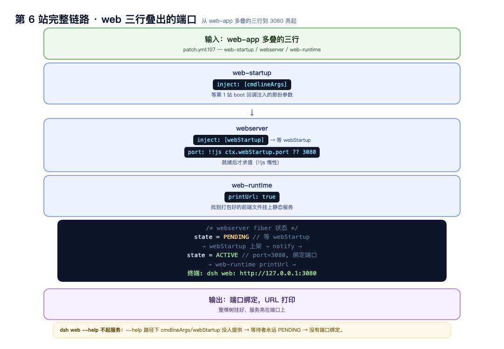
图：第 6 站完整链路——web 三行叠出的端口
● ● ●
第 6 站服务已经亮在端口上；剩下最后一个问题：怎么干净地下岗。卸载时插件注册过的一切要收干净。所有注册走 ctx.effect() 或 ctx.on()，登记时交出 disposer；Fiber 进 UNLOADING 后 disposer 逆序执行，后注册的先回收。
这套可逆最直接的受益者就是热重载。把第 1 站省略的那段接线补上——runProfile 收尾时装配监听（apps/cli/src/profile-boot.ts:267，省略守卫判断）：
// 组合里没有 hmr 服务时（web 禁用了共享模块重载），
// 挂一个只监听文件、不带模块根的 hmr 实例——
// 保证每个长期运行的界面都支持 cordis.patch.yml 热重载
if (ctx.get('hmr') === undefined) {
await ctx.loader.create({ name: '@deepseek-ai/cordis-plugin-hmr', config: { root: [] } })
}
// 两份用户补丁各挂一个监听：profile 自己的 + 全局的
await watchUserPatches(ctx, {
binName: NAME,
filename: composed.profile.patchPath,
// 重组函数：bundle 在下、覆盖在上、全部深拷贝
compose: composeLive,
})
await watchUserPatches(ctx, {
binName: NAME, filename: homePatchPath(), compose: composeLive,
})
文件一保存，回调做什么（packages/boot/app-boot/src/index.ts:232，省略错误处理）：
hmr.registerConfig(filename, async () => {
// 重新读这份补丁文件（每次都重读，两份监听不串对方的旧内容）
const userPatches = loadOptionalPatches(binName, filename) ?? []
// 重组：bundle 层在下、用户层在上，全部深拷贝
const patches = compose(userPatches)
// 关键一步：更新根 Include 条目的 patches 配置。
// 整棵树都由这一个根条目挂载——它的配置一变，
// include 插件重放补丁到树上，差异自然产生
await entry.update({ config: { ...includeConfig, patches } })
})
热重载的完整链条：保存补丁文件 → hmr 监听触发 → 重读、深拷贝重组 → entry.update 更新根条目 → include 重放补丁 → 树自己算差异：新增的行走第 2 站那套 import + 挂载；消失或被改掉的行进 UNLOADING，disposer 逆序回收；没变的行原地不动；依赖被拆掉行的 Fiber 掉回 PENDING，新行上架后再唤醒一轮。
还有一个容易踩的细节：补丁文件存在但写错（解析不了）会直接报错——「文件在却应用不了是配置错误，必须大声失败，绝不静默跳过」。删文件没关系（等于没有这层），写坏了不行。
写过前端的人对 HMR 不陌生：Vite、webpack 监听源码文件，改完不刷新页面、组件状态还尽量保留。dsh 的热重载名字像、做的事不同，对照一下：
| 前端脚手架 HMR | dsh 的热重载 | |
|---|---|---|
| 监听对象 | 源码模块文件 | 补丁文件（配置清单） |
| 替换单元 | 模块代码，组件实例尽量保留 | 插件行：旧 Fiber 整个卸载、新 Fiber 全新挂载 |
| 状态策略 | 保留组件内存状态（fast refresh） | 不搬内存状态——持久数据在会话日志和磁盘，其他插件按服务键位重新接上 |
| 生效范围 | 浏览器里 | 服务进程里，所有界面共用 |
一句话：前端 HMR 是「换零件不停机」，dsh 是「重排清单、旧的拆干净、新的重挂」——因为插件的可逆注册保证了拆得干净，才敢这么重载。另外第 1 站提过：web 界面挂的是 watch-only 实例（root: []），只做配置热重载、不做模块级热替换——代码改动还是要重启。
可替换性有了底气：上一篇敢说「替换一行清单换掉一个能力」，因为旧的走得干净。
本站完整链路
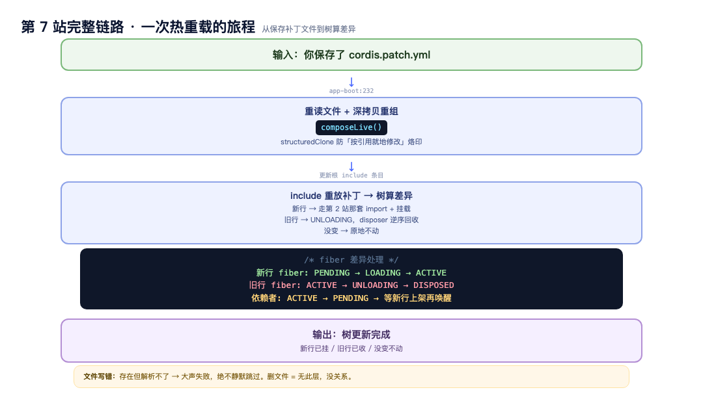
图：第 7 站完整链路——一次热重载的旅程
● ● ●
第 1 站说 runProfile 装了保险、定了信号，这三处实现都值得看全。先看保险和信号（apps/cli/src/profile-boot.ts:207）：
// 退出信号。supervisor（进程看护器）指 systemd、Docker、pm2 这类
// 把 dsh 当服务托管的工具——它们停止服务发 SIGTERM，
// 按「正常退」处理，退出码 0；
// SIGINT 是你手动 Ctrl+C 的打断，退出码 130——启动窗口期内同样生效
process.on('SIGTERM', () => interrupt(0))
process.on('SIGINT', () => interrupt(130))
// fail-loud 守卫（installFailLoud）：快速失败——
// 未捕获异常先把整棵插件树 dispose 干净，再带着错误退出
installFailLoud(NAME, process, async () => {
await app.current?.fiber.dispose()
})
再看深拷贝。第 7 站的热重载每次都要重组配置，重组函数长这样：
const composeLive = (): PatchOptions[] => structuredClone([
// bundle 层在下
...composed.bundlePatches,
// 你的 profile 层
...loadOptionalPatches(NAME, composed.profile.patchPath) ?? [],
// 全局层
...loadOptionalPatches(NAME, homePatchPath()) ?? [],
// --patch 临时层在最上
...composed.overlays,
])
为什么每次都 structuredClone（深拷贝）：include 插件会把 insert 的行按引用放进树里，后面的补丁会就地修改这些对象——如果重组时复用同一份解析结果，你的覆盖就被永久写进了 bundle 层，再想撤销也回不去了。深拷贝让每次重组都从干净的原始层开始。
三处细节合起来是一句话：宁可退出退出得干净，重装载重载得干净——错了整个退，改了整个重来，任何一种路径都不留中间状态。
本站完整链路
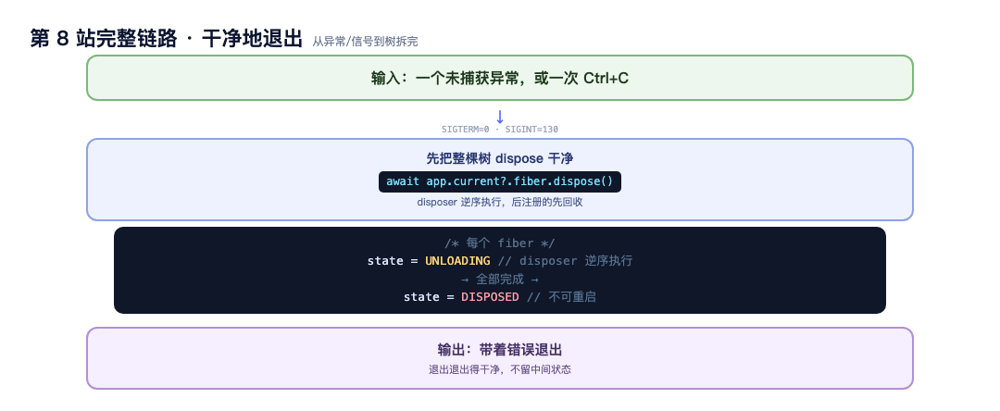
图：第 8 站完整链路——干净地退出
● ● ●
Cordis 提供了插件机制（挂载、等待、上架、通信、卸载），但Cordis 自己不包含任何 agent 能力——没有模型接口、没有工具系统、没有会话记忆。dsh 做的事：把这些能力一件件实现成 Cordis 插件，挂在同一棵树上：
# dsh-base 清单的核心行（简化）
- id: agent-loop # Agent 主循环：turn/step 双层循环
- id: llm # 模型接口：流式请求、多适配器
- id: session # 会话日志：追加式记录
- id: tools # 工具注册表 + 三段瀑布把关
- id: subagent # 委派：八种子 agent 提供方
- id: system-prompt # 提示词段注册表
- id: sandbox # 沙箱与存储
- id: timer # 定时任务
每一行就是一个用 Cordis 插件形态实现的 agent 能力。dsh 没有写一个「框架」——它写了一堆插件，然后用 Cordis 把它们挂成一棵树。这也是为什么 78 行清单能装下一个 agent：清单里每行只需要声明 id、name 和 inject，剩下的（等待依赖、按序启动、通信、卸载回收）全是 Cordis 在做的事。
换句话说：Cordis 是插件引擎，dsh 是用这台引擎拼出来的一辆完整的车。
● ● ●
机制讲完了，回到你自己的动作。假设你照前奏篇写了 hello-plugin，想挂到 web 上——左边是你做的两件事，右边是框架内部逐行消费它的完整流程，每一步都对应前面某一站：
| 你做的 | 框架内部（对照前文） |
|---|---|
写好 hello-plugin.ts（导出 apply） | 什么都还没发生——它只是盘上一个文件，框架不知道它存在 |
往 ~/.dsh/profiles/web/cordis.patch.yml 加一行 insert（或 dsh plugin --profile web add 包名，走 pnpm 装进 profile 目录） | watchUserPatches 检测到 patch 文件变化（第 1 站提过的热重载入口） |
| 保存文件 | 重组配置树：四层重新叠一遍、深拷贝防烙印（第 1 站 runProfile），你的那行进树 |
| —— | 新清单行走 entry._init：tree.import 把你的包/文件变成模块（第 2 站） |
| —— | registry.plugin()：校验形态 → 建 Fiber → Inject.resolve 解析你的依赖声明（第 2 站） |
| —— | 你的插件如果声明了 inject（比如要 ctx.llm）：停 PENDING 等待（第 3 站） |
| —— | 依赖服务 ACTIVE → _checkImpl/_refresh 唤醒 → 你的 apply(ctx) 开始跑（第 3 站） |
你在 apply 里注册工具、监听事件、加提示词段 | 每个注册走 ctx.effect/ctx.on，登记时就带上 disposer（第 7 站可逆） |
| 改主意，删掉那一行 | 树重组 → 你的 Fiber 进 UNLOADING → disposer 逆序回收，注册全部撤销，进程不留残迹 |
看懂这张表，写插件时你就知道每一步卡在哪：插件没跑起来，先看是 import 失败（错误会定位到你的行）、还是停在 PENDING（依赖名写错，等一个不会来的服务）、还是 apply 抛了异常（FAILED 状态）。你写的代码，经过的就是上面这条流程。
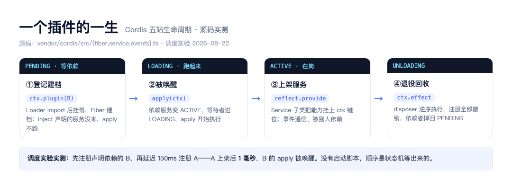
图：一个插件的一生
对照两张图收尾：开头那张是「从四个字到端口亮起的数据流转」（每步真实输入输出），这张是「一个插件的整个任期」。Cordis 的全部工作，就是把这两张图变成自动的——dsh 的所有能力都长在这台机器上。
回顾本篇走过的八站：
第 1 站 dsh web → 参数归一 → boot 建上下文（注入环境快照和参数）
第 2 站 boot 五步依次拆：Context → plugin → 回调 provide → 合并挂树 → await
第 3 站 fiber 状态机：PENDING → _checkImpl → _refresh → ACTIVE
第 4 站 Service 上架：super() → provide 存值+通知 → ctx.weather 可用
第 5 站 waterfall：inner（干活函数）+ next（层间传话人）→ 否决权
第 6 站 web 三行叠出 3080 端口（inject 等待 + !!js 延迟求值）
第 7 站 热重载：保存补丁 → 深拷贝重组 → entry.update → 树算差异
第 8 站 干净退出：信号 → fail-loud → dispose 树 → 带着错误退出
Cordis 的五个概念在各站的落点：插件即 Service（第 2 站 plugin()）、ctx 容器（第 2 站 Context）、inject 依赖（第 3 站 Fiber 等待）、类型化事件（第 5 站 waterfall）、注册可逆（第 7 站 disposer 逆序）。
下一篇拆组装线：配置树本身是怎么四层叠出来的。
素材（按站排列）：